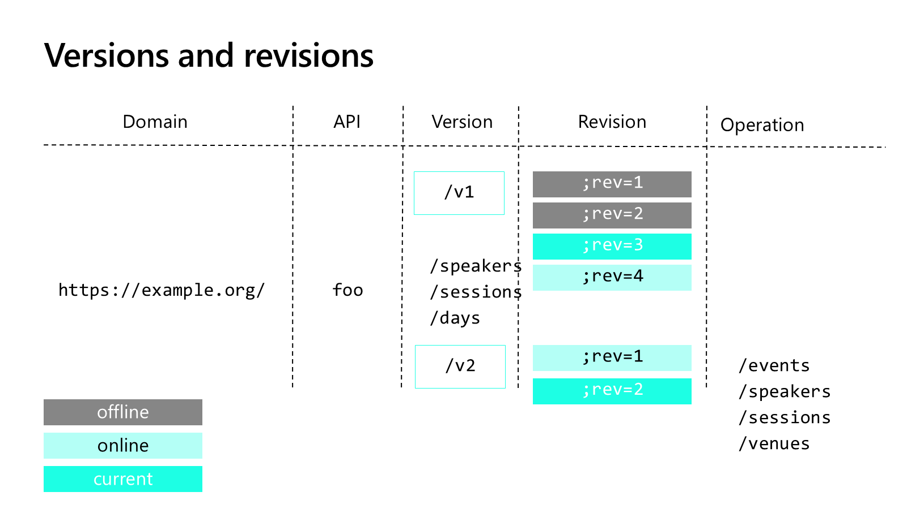
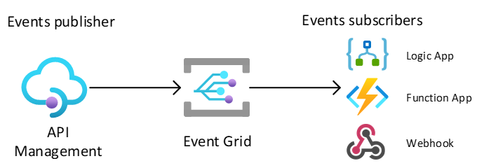

Versions and Revisions Solve Different Problems
Version
Expose a distinct contract that consumers adopt explicitly. Use it for breaking changes and choose a path, header, or query versioning scheme.
Revision
Model and test a nonbreaking change before making it current. Consumers continue using the current revision while you validate the candidate.
flowchart LR
A[Current revision] --> B[Candidate revision]
B --> T[Validate calls]
T --> P[Make current]
P --> M[Monitor outcome]
class A,B azure
class T,P success
class M warning
Blue is the existing contract and candidate. Green is validation and promotion; orange is the operational follow-through.
A revision does not make a breaking backend change safe by itself. Validate behavior and backend compatibility, not just the APIM configuration diff.

A versioning scheme can use a path segment such as v1, a query parameter, or a header. An explicitly addressed noncurrent revision uses the ;rev= marker in its API URL. Do not confuse that marker with the version scheme or assume a new revision automatically changes which backend deployment is running.
Choose Evidence by Question
| Question | Start with | Inspect |
|---|---|---|
| Why did this request fail? | Request trace | Inbound, backend, outbound, and on-error stages |
| Is latency or error rate changing? | Azure Monitor metrics | Time range, operation, response codes, and latency distribution |
| Which requests share a pattern? | Configured request logs | Correlation, sampling, retained fields, and backend responses |
| Where is time spent across services? | Application Insights | Instrumented dependencies and distributed traces |
Telemetry support, lag, retention, sampling, and configuration differ by gateway and tool. Logging is not automatically a complete audit trail, and a missing sampled event is not proof that a request never occurred.
Ocp-Apim-Trace header is no longer supported; use the portal trace workflow or the documented time-limited debug-token flow.Promote Configuration, Not Unreviewed Portal State
Multiple teams and environments make manual changes difficult to reproduce. Treat API definitions, policies, backend references, and diagnostic settings as reviewed deployment artifacts. Parameterize environment differences instead of copying production credentials or resource addresses into development.
| Tool or approach | Useful responsibility | Decision to make |
|---|---|---|
| Management REST APIs and SDKs | Programmatic resource and API configuration | How authentication, API versions, retries, and idempotency are handled. |
| Azure CLI and PowerShell | Script repeatable management operations | How scripts report failures and avoid environment drift. |
| ARM templates and Bicep | Declare Azure infrastructure and configuration | How modules, parameters, dependencies, and secret references are reviewed. |
| Terraform | Manage infrastructure/configuration with provider resources | How state, provider support, access, and lifecycle ownership are controlled. |
| APIOps | Extract API artifacts for review and publish approved changes | Which artifacts teams own and which pipeline is the source of truth. |
A practical promotion model has three gates: define the contract and configuration; review compatibility, policy behavior, and security; publish the approved artifacts to the intended environment. Test the deployed gateway and backend together, and retain a rollback strategy appropriate to both.
Do not let several tools independently manage the same policy or API without an ownership rule. A portal hotfix can be overwritten by a later pipeline, and a successful deployment does not prove the consumer contract is still compatible.
Choose Tracing or Live Policy Debugging
Request tracing explains a completed request's pipeline. Live policy debugging lets you pause at a policy, step through effective statements, inspect system and user variables, and examine the scope and error at the point where it occurs. Use it to test an assumption about order or expression state, not merely to repeat a successful request.
The current VS Code workflow requires the APIM extension and REST Client extension. Policy debugging is supported only on Developer, and it uses the built-in service-level all-access subscription, which requires service-owner access. These requirements are separate from the credentials you give API consumers.
For example, when an inherited header is missing, inspect whether the relevant base executes and whether a later statement replaces the header. For an expression failure, inspect the variable and request state rather than adding logging of entire tokens or payloads.
The older slide's "one debugging session" limit is not restated as a current universal guarantee; use the current documented restrictions. The required lab uses portal request tracing, so live-debugging prerequisites do not extend the four-hour required path.
Combine Metrics, Logs, Traces, and Reports
Metrics show trends such as failures, traffic, and resource pressure; alerts make selected conditions actionable. Activity logs concern resource-management operations. Configured gateway resource logs describe runtime requests and can feed Log Analytics queries and dashboards. These are different data sources with different collection and retention choices.
Application Insights integration needs a logger connection and diagnostics enabled for the intended APIs. Instrument the backend and propagate supported correlation context for an end-to-end view; one gateway trace alone cannot explain every dependency. Review sampling, recorded headers/body fields, performance impact, ingestion cost, and retention deliberately.
| Reporting need | Use | Watch for |
|---|---|---|
| Provider API usage and performance | Azure Monitor-based analytics dashboard backed by gateway logs in Log Analytics | Configured data source, ingestion delay, and the right API/product/subscription dimensions. |
| Classic built-in reports | Legacy provider analytics in classic tiers | The announced March 2027 retirement; plan migration rather than teaching these as a permanent default. |
| Consumer usage | The developer portal's individual usage report where supported | It is not the provider's entire service report and is currently unavailable in v2 portal tiers. |
| Custom telemetry or reporting | Selected logs, queries, or Event Hubs pipelines | Your own schema, access controls, completeness, and retention; Power BI or other reporting needs its own data integration. |
| Self-hosted runtime | Supported telemetry integrations plus locally configured logs/metrics | Deployment-model differences; do not assume every managed-gateway diagnostic destination behaves identically. |
Use latency distributions and error rates alongside request counts. Averages can hide a slow tail, and sampling can hide an individual request. Keep sensitive bodies, credentials, and identifiers out of routine collection unless a reviewed diagnostic need and access policy justify them.
React to APIM Events With Event Grid
APIM can publish supported resource events to Event Grid so that a Logic App, Function, or webhook can react. For example, an onboarding process can respond to a supported user-created event rather than continuously polling for new users.

Distinguish control-plane notifications, such as supported API or product changes, from a request-by-request telemetry stream. Current documentation also describes preview data-plane events for backend circuit breakers and self-hosted gateway access-token lifecycle. That does not mean Event Grid emits every API call.
Choose supported event types and filters, authorize the destination, and design handlers for repeated delivery and processing failures. Use metrics and request logs for traffic analysis; use the log-to-eventhub policy when you need an explicit custom telemetry stream. Event Grid and Event Hubs have different roles.
Next Steps
Inspect a Catalog request in Lab 02. For production, review configuration changes, automate repeatable releases, and verify the effective policy and consumer contract before promotion.
Key takeaway
Release safety requires both a compatibility decision and observable evidence. A successful import is only the beginning.